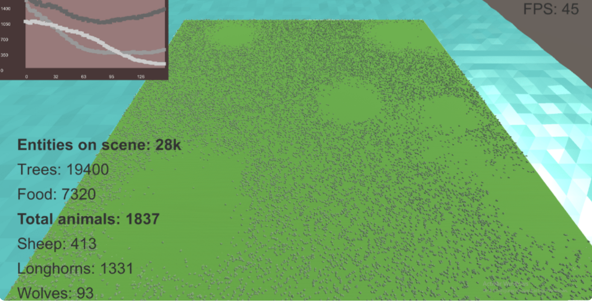
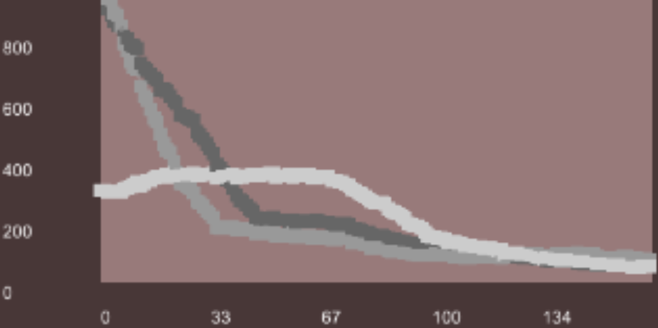
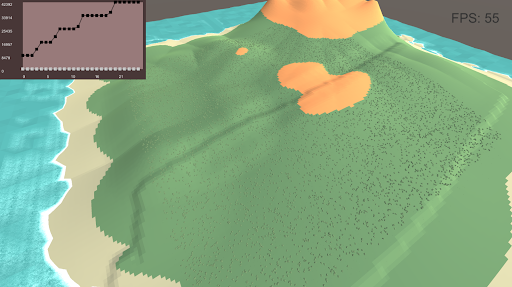
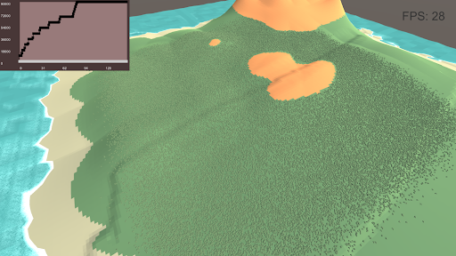

Ecosystem Simulator - Optimising Performance
Ecosystem Simulator built in Unity and C# with thousands of entities.

Project description
Project built as the end of degree project at university, with the goal of building an ecosystem simulator that can handle thousands of entities on the scene at the same time while maintaining a good level of performance.
Animals actions: Eating/Hunting
Animals in the ecosystem need food to satisfy their hunger. Therefore, herbivores eat plants and fruits while carnivores hunt herbivores.

Sheep eating

Wolf hunting
Animals actions: Reproduction

Wolves reproducing
Animals look for others of the same species of different gender in order to reproduce and create descendants.
Statistics & environment modification
The stress tests performed showed that the simulation could run at 60-80 FPS with ~5000 animated animals and around 20-25 FPS with 11.000

Animals modifying the environment

Population survival statistics
Stress tests - 11.000 animated animals on screen
The stress tests performed showed that the simulation could run at 60-80 FPS with ~5000 animated animals and around 20-25 FPS with 11.000

11k animals

5000 sheep army
GPU Instanced Rendering - 90.000 elements on screen
This technique allowed up to 90.000 trees on a low-end GPU (NVIDIA GeForce 1050)

43.000 trees
